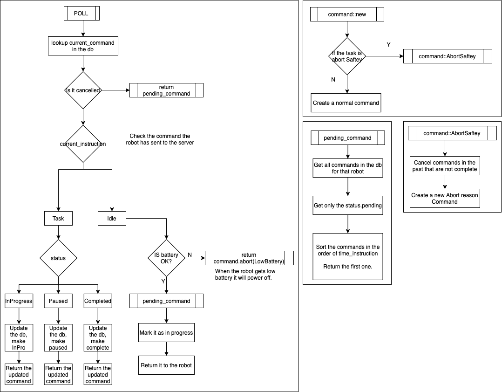

Backend
Overview
One of the most essential aspects of the project is the connection between the backend server and the web interface and robot.
In order to support the operation of the robot and the web interface the backend system provides a myriad of services, which are secure, highly performant, and extensible.

Rationale
Architecture
Having a centralised C2 (Command & Control Server) allows for greater simplification and de-duplication of functionality across the various controlling entities that could be employed in the future, in addition to the Web Application that is currently in development. Any system that is capable of consuming the Claynse REST API (Representational State Transfer Application Program Interface) will be able to issue commands to the robot.
This allows for the various elements of the system to be developed in isolation, and to be interchangeable with other components, resulting in a modular architecture.
It is possible for the backend systems to store the metrics of the robot, and potentially use them in the future - whether for simple applications such as graphs, or more complex data analysis to identify charging patterns, command behaviours or to provide additional context to log messages.
By centralising the issuing of commands we can ensure that only valid commands are ever given to the robot, allowing for comprehensive validation of all potential commands. This abstracts substantial complexity for the hardware team: not only would this logic reduce cost (if this was to be migrated to an integrated circuit), it also allows custom rules to be added dynamically in the future - without the requirement of a firmware update. This helps to provide a seamless user experience.
REST API
It was decided that a REST API would be the best method of communication, there were a few reasons for this.
- Using a REST API is much simpler - taking into account all of the constraining factors, such as development time and the technical debt involved, it was not feasible to implement our own protocol, even an internet layer protocol would be a massive undertaking.
- I had considered an approach utilising a socket connection to the robot to avoid the overhead of establishing a TCP/HTTP connection each time, this would have been a mistake. This would have required the server to be able to hold open connections for each robot using the service.
- As the popularity of the product increased this would have not been sustainable to have thousands of open socket connections to a machine
- This would have caused a very large resource allocation but very low utilisation, which is a inefficient use of compute resources
Therefore it was decided that a REST API using the standard HTTP methods for interacting with the system was the most appropriate approach.
Dockerized Application
Scaling
This allows each instance of our backend to run independently of each other in the case we need to scale the application, it is as simple as increasing the number of instances in the swarm manager (Docker Swarm, Kubernetes).
Deployment
The deployment of our applications is far simpler, in order to run the backend system it will be as simple as running the image on the server, again using the Makefile, the devops engineer would only have to run the make command.
Equally this could be done by a CI/CD pipeline.
Other cloud providers such as Google Cloud Run & AWS Lambda have the ability to upload an image directly and have it run. This has the advantage of not having to manage infrastructure and have the ability to scale to demand, spinning down to zero when not in use. This is a very efficient use of compute.
Again looking to the future, without moving to micro-services, a Serverless Queue could be added to allow them to be buffered and rate limited to avoid overwhelming the server but still being able to receive requests. Another option would be to have a load balancer, and separate servers based on geographical location very similar to how game servers manage the immense amount of traffic they are subjected to.
Development
Another key advantage of using Docker and Docker Compose is the ease of use for other developers in other teams. For example say the frontend team wants to check that their application is making the correct calls instead of deploying both into production and testing (which is a very bad practise), they can juts run both locally.
This keeps the development costs low and reduces the development complexity, the other developers would just have to clone the backend and run the make command, this would start all of the backend systems locally.
Multistage Docker Build
The biggest issue I faced with the backend systems was the very large image size.
The final size is determined by the last image used in the Dockerfile: in our case this is the rust image, whose total size, including the static assets, is 4.07 GB.
The rust image needs to contain all of the dependencies to compile the source code and statically link it against libc, therefore the image needs to contain the entire rust tool chain; cargo, rustc, etc, in addition to a shell, and all of the standard libc libraries. However, it is not possible to use a smaller final image as all of these resources and dependencies are required in order to create our final executable.
The solution to the issue is to use a mutlistage build process.
We use a builder image which contains all of the required dependencies and software to create our executable.
Once this executable has been created, we can copy it to another, much smaller, image.
In our case we use the Google Distroless Images. This is done for a few reasons: it allows us to create images with size of around 28 MB, which is considerably smaller, and is more secure as it does not contain a shell or other essential software that could be exploited.
Consistent Environments
From a DevOps perspective the current infrastructure is excellent it allows for the development environment that is run locally to be used in production. It is as simple as cloning the code on the server and running make.
From a team perspective this is great, it allows for every member of the team to run the full stack system by only installing Docker, if there implementation works locally it is then highly likely to work in production, giving the developer confidence in their work, ensuring more robust and better tested code finds its way into production.
Another major advantage that is obvious is simplicity, only docker needs to be installed, no obscure or insecure dependencies are required.
PostgreSQL Database
The database that was chosen for the project was the open-source, high performance, relational SQL database PostgreSQL.
I have decided to use the industry tried and trusted PostgreSQL, due to the reasons above. A relational SQL database that is fast, reliable and has extensive internal rollback functionality, in case of an error during a transaction or other operation.
The commands to run the database migrations are detailed in the back-end systems Makefile, allowing them to be conveniently documented and executed by other team members.
High Performance
With respect to the scaling of the backend systems, unless the architectural decision was made to transfer to micro-services, a single database server would be used. This means that the database must be high performance to service all of the request from the backend in a timely manner.
Security
The current design ensures that the database is not accessible via the internet, actually it is only accessible to the backend systems contain running on the internal docker network. This greatly increases the overall data security of the system, the only method for data exfiltration is through the REST API.
Migrations
All of the migrations for the system are executed through three commands in the Makefile: make migrations-run, make migrations-reset, and make reset-database.
The up.sql file contains the SQL commands used to create all of the tables used in the system, in addition it also contains constraints, ensuring that the database entries remain consistent.
down.sql
The down.sql file contains the SQL commands used to destroy all of the tables in the database.
The reset.sql file contains the SQL commands used to remove all of the data from the tables.
The robot.sql file contains the values of the robots corresponding to the QR codes that have been generated.
Services
Auth Endpoint
In order to prevent abuse or malicious attacks to the system, all of the command issuing endpoints are protected, they require that the user is Authenticated and has the correct Authorisation, before they will process the request.
To authenticate with the backend, you will need to provide your username and password to the /auth endpoint, assuming the credentials are valid, you will be provided with a short lived JWT (JSON Web Token), authorising that user to access their command service in a stateless manner.
Command Endpoint
The HTTP POST method once applied to this endpoint allows the issuing of commands by some user to the system. All of the required is passes via the request body, ensuring it is encrypted by the TLS/SSL protocol. However, this endpoint is secured - it requires an authorisation token specifically a JWT (JSON Web Token), without a valid token a 401 Unauthorized response will be received.
Once the request has be received, the backend middleware will take the request and validate the JWT (returning early if required), before calling the specific handler, where the command that the user has provided will be validated before being stored in the database.
Polling Endpoint
The only endpoint that the robot will call is the /poll endpoint, the request to this endpoint will include essential metrics of the robot including the current Instruction the robot is performing and the current battery level of the robot.
The server then gathers the current task the robot should be doing (the command it previoudsly issued to it), the current state of the robot (the infomation given in the request), and the next command that will be issued if any.
One of the core rules for the system is that if the battery level of the robot is insufficient the robot will immediately abort (Abort(AbortReason::LowBattery)) the other rules allow for the various functions of the system.
As previously discussed, we can see the Strict Type System, coming into its own, allowing all of the different types of the system to be expressed. The way in which I have written the system ensures that the core rules for the system are encoded in the type system, therefore invalid states simply cannot be reached, since the system will not compile, this is a major advantage and design choice I have decided be using the Rust language idiomatically.
As previously discussed the robot will use a standard HTTP request to the backend system.
This is referred to as Polling, the robot gives some context to the backend, allowing an appropriate response to be coordinated.
A poll contains the minimal set of context required by the backend, robots_serial_number, command_id, status, and battery_level.
Flow of the Polling Routine
Below is a very high level description of the flow of the poll routines:
- The robot sends a
HTTPrequest to the/pollendpoint - Update the status of the robot in the database
- This is done to allow the web interface to immediately see the latest infomation about their device
- Check the battery level of the robot
- If the value is below some predetermined value we need to
Abort(AbortReason::LowBattery)
- If the value is below some predetermined value we need to
- We need to now process the correspond
Commandfor thisPoll- The
Commandis retrieved from the database by thecommand_id
- The
- Return this response to the robot.
Static File Service
Another essential service that the backend provides is a basic static file server, this is used to host the frontend static assets. Simply any file in the static directory will be served under the /static path.
The other potential approach for this would have been to introduce another container, possibly using the NGINX Image, to serve the content.
Interesting Implementation Details
Rust
Module System
Each service of the system provides is written as a separate module allowing for the system to be easily extended with additional functionality in the future, whilst maintaining a strict distinction between their functionality.
After the Rust 2018 module system revamp, the module system is very intuitive and very flexible, allowing me to design the architecture of the code as I see fit.
Performance & Safety 1
Rust is blazingly fast and memory-efficient: with no runtime or garbage collector, it can power performance-critical services, run on embedded devices, and easily integrate with other languages.
Rust’s rich type system and ownership model guarantee memory-safety and thread-safety — enabling you to eliminate many classes of bugs at compile-time.
Recoverable Errors
Idiomatic Rust code uses the Result<T,E> type, to show that a function that would usually return a value of type T, may fail and produce an error of type E. I have create a custom error type for the backend system, encoding all of the possible errors.
I have then implemented the From<ApiError> trait for the HttpResponse type, meaning that the error type can be propagated call stack and be returned as a HttpResponse, with an appropriate HTTP Status Code and description of the error.
The conversion is handled automatically by the try operator (?), which is really nice!
Asynchronous
The backend system is fully asynchronous and is using the newly stabilised async/await syntax, along with the Tokio executor that comes with Actix Web.
The database for the backend supports concurrent access, therefore we need to take advantage of this potential performing boost.
Since a database operation will take multiple magnitudes more time than standard computation, we can perform other tasks whilst waiting for the Future to yield its value.
This is one of the reasons the backend system has such great performance characteristics.
FromRequest Trait Implementations
The Auth Endpoint utilises the FromRequest trait 2 to encapsulate all of the authentication and authorisation logic, essentially acting as middleware to the request handler by simply giving the user access to a User struct, containing all of the relevant information for that user.
A FromRequest implementation can mutably access a HttpRequest, allowing the header of the request to be parsed, in our case we utilise the Authorisation header to provide the token to the backend.
If the token is valid the appropriate users information will be fetched and returned to the handler, so the request can be appropriately serviced - this ensures that a user cannot execute commands for another user.
On the other hand, if the backend was unable to validate the tokens value then the service will immediately return a 401 Unauthorized error response.
Footnotes:
A Trait is a specific Rust language feature, which can be throught of in a similar way to a Haskell type class